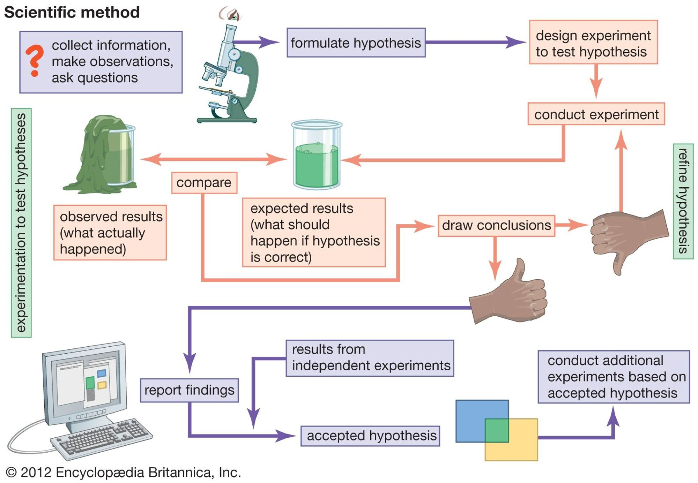
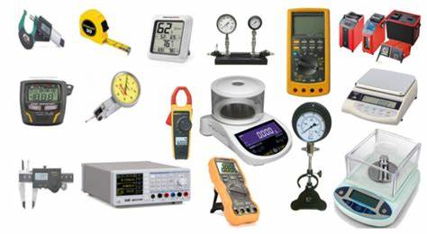

When you want to awaken people’s interest in science, it is important to explain in a general way what it consists of. I do not think I have enough experience to give a detailed explanation of what science is, so I will limit myself to describing what it represents for me and some related concepts.
What is science?
Science can be defined as a human activity in charge of gathering knowledge and describing the different phenomena that make up reality in all its extension and complexity.
Knowing and describing different natural phenomena, including social phenomena, gives us the possibility to develop and improve solutions that satisfy diverse human needs. In this way we can use scientific knowledge to influence reality itself: we cure diseases, improve processes that did not work well before, send satellites to outer space and many other things. At the beginning, when scientific knowledge is produced, it may not have any use, but over time some use may be found, which may depend on advances in other areas of science. Also, of course, all of the above also depends on the branch of science to which we are referring.
Science, above all, is a social activity and, like all human beings, people who do science can and are susceptible to making mistakes. It is worth noting that unlike other human activities, such as religion or politics, science has the necessary mechanisms to detect and correct errors, biases, omissions and other mistakes. Science is undoubtedly an activity that requires the people involved to be self-critical and always willing to improve based on their mistakes.
Although science is not a panacea, a cure for all the ills and problems that afflict humanity, it offers us an objective way to bring prosperity to every human being.
The scientific method
How is science done? Each branch of science has its own methods for generating knowledge. To do science we can follow some general guidelines, but not recipes that must be followed point by point. Below I list several steps that we can follow to generate scientific knowledge, but, in line with what I have just mentioned, we must bear in mind that there may be intermediate steps or even some points can be eliminated or modified depending on the area of knowledge we want to address.
- Recognize a question. This may be related to some unexplained phenomenon or a problem to which we wish to provide a solution.
- Make an adequate conjecture, a hypothesis, of the possible answers to our question. This is usually done through literature research or with the help of other means.
- Predict the consequences of the hypothesis. Once we have researched the possible answers, we make a prediction of what they would imply if they were actually true.
- We conduct several experiments to test our predictions. From these experiments we obtain data or records. This step is important because it helps us test the hypothersis against the reality.
- If our data or records do not agree with our previous predictions, we go back on the fly and look for or generate another hypothesis that might provide the answer to our question.

And what conditions must be met for something to be considered science? There are two key aspects:
- The observations and/or experiments produced when investigating a particular phenomenon must be reproducible. That is, each time we repeat the experiment and our measurements (or records) under the same conditions, the results should be very similar to each other, even if the research is attempted to be reproduced in different places or countries.
- Every scientific proposition must be falsifiable, which means that we must be able to formulate experiments whose results would deny the explanations given by such propositions. If it is not possible to formulate, at least with imagination, experiments aimed at demonstrating that what is said by a science is false, then it is quite possible that we are talking not of a science, but of a pseudoscience.
Scientific measurements
Measurement plays a central role in science. A measurement, in very general terms, is the assignment of a number to a certain phenomenon in nature. Measurements must be objective and do not depend on the judgment of the person making them. For the mass of an object, for example, we can use a balance, which will show us a number with some associated unit (grams, kilograms, etc.). Undoubtedly, an important part of the development of science is to find good and rigorous ways of making measurements.

It is important to mention that, depending on the phenomenon, there may not be rigorous ways to measure it. How do we measure some of the phenomena described by the social sciences?
Hypothesis, law and theory
As we saw earlier, a hypothesis is an assumption that can be substantiated in research through various means. When a hypothesis is sufficiently tested and no contradiction is found, it is considered a law or principle. A set of concepts, abstractions and laws related to a natural phenomenon becomes a theory. Theories can be considered as the highest level of scientific knowledge, since from these theories research problems can be posed and thus generate more knowledge.
It should be noted that there is no hierarchical relationship between law and theory. A theory is not below a law, nor vice versa. In the case of laws, they usually establish the relationship between different concepts and are simpler than theories. Also, depending on the branch of science, laws may not be as rigorous; a law is not the same in biology as in physics, for example. As for theories, they explain a set of phenomena (they are broader than laws) and are susceptible to change and improve over time based on the evidence that is generated from them or with the help of other branches of science.
Myths about scientific research
There are some beliefs that somehow contribute to people’s lack of interest in science, mainly two:
- Scientific research is very complicated and difficult. False, any human being can do research if they follow the right process for the problem they want to address. If we think about it carefully we are always doing research in our daily life.
- Research is not linked to the everyday world. Also false, many of the conveniences and services we enjoy today have been derived from scientific research: smartphones, internal combustion engines, medicines, nylon, among many other products.
Personally, I believe that these misconceptions are due to the inability of research centers, universities and governments to communicate science to as many people as possible. Added to this is the superfluous treatment that the sensationalist media give to science and its findings.
Deduction and induction
Deduction and induction play a fundamental role in scientific work.
Deduction. Reaching a particular conclusion from general premises. This is what we do when we formulate hypotheses from existing knowledge or when we make predictions based on established theories and laws.
Induction. Reaching a general conclusion from observation of particular cases. The conclusion is considered probable, but not necessarily certain since there is always the possibility that new observations or evidence will disprove the conclusion. This is what we do when we perform experimentation to test our hypotheses.
From both definitions we can infer that deduction and induction are processes that feed back on each other: we derive hypotheses from existing knowledge (deduction), we test these hypotheses again and again, improving at each step the initial hypothesis (induction). When sufficiently tested, the hypothesis becomes part of the theory that will allow us to generate new hypotheses, thus repeating the process of deduction and induction.
Final reflection
The development of science depends and has depended on the contribution of many people throughout history. It is a constantly changing human activity where its different branches feed back to improve our understanding of the world and the universe of which we are a part.
Scientific thinking is within everyone’s reach, it is not exclusive to universities or special beings. To a greater or lesser extent we can all put into practice the scientific method to ask and solve questions about what surrounds us.
To learn more about this topic
Below is a list with a couple of references and web pages that may be of help if you wish to delve a little deeper into the subject of this publication.
Dahlstrom, M.F. (2014) ‘Using narratives and storytelling to communicate science with nonexpert audiences’, Proceedings of the National Academy of Sciences, 111(supplement_4), pp. 13614–13620. Available at: https://doi.org/10.1073/pnas.1320645111.
Rose, S.P.R. (2003) ‘How to (or not to) communicate science’, Biochemical Society Transactions, 31(2), pp. 307–312. Available at: https://doi.org/10.1042/bst0310307.
scientific method (2023) Encyclopædia Britannica. Available at: https://www.britannica.com/science/scientific-method (Accessed: 27 September 2023).
What Is Science? (2021) NASA Science. Space Place. Explore Earth and Space! Available at: https://spaceplace.nasa.gov/science/en/ (Accessed: 27 September 2023).
The text in this publication is free to use under license Creative Commons Attribution 4.0 International License.